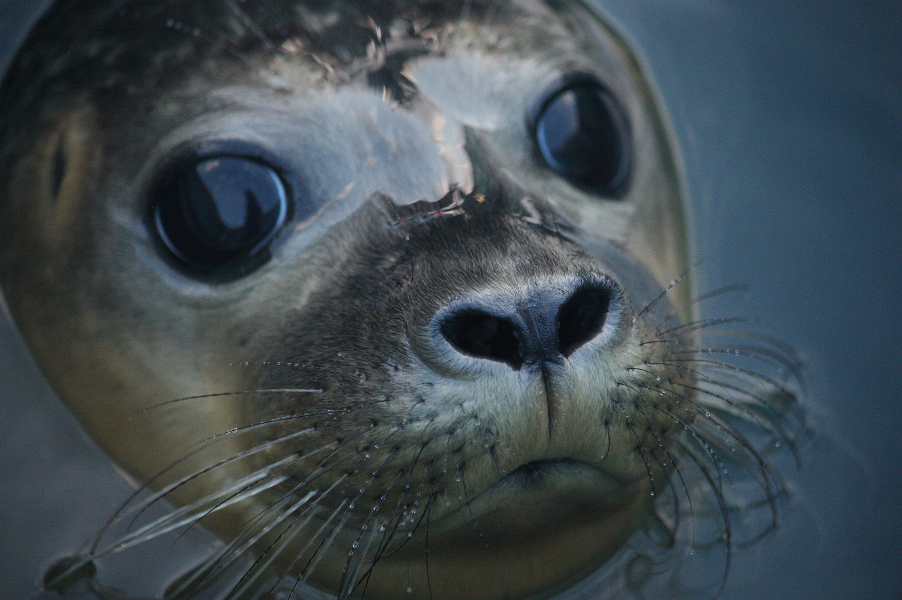
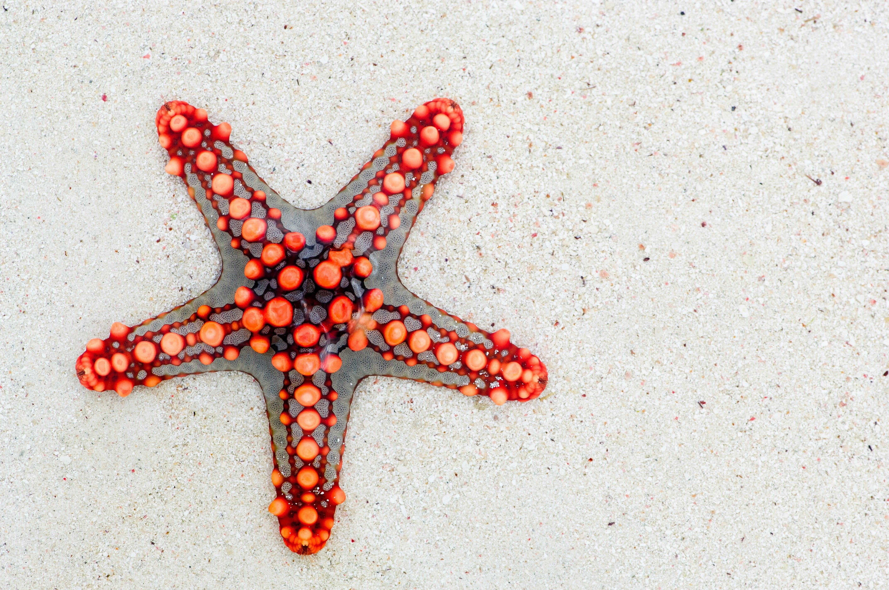

Інді́йський океа́н — третій за розміром океан на Землі, між Африкою, Азією, Австралією та Антарктидою і займає близько 20 % водної поверхні Землi
Індійський океан був першим океаном, який відкрив європейський дослідник Васко да Гама. Раніше він називався Великою затокою, Східним океаном, Південним морем, Ерітрейським морем. Стародавні люди, які проживали на березі океану, називали його величезним морем.
Жителі океану
- каракатиці
- кальмари
- лангусти
- морські змії
- морські черепахи
- морські зірки
- морські їжаки
- дельфіни
- кити
- тюлені
- креветки

